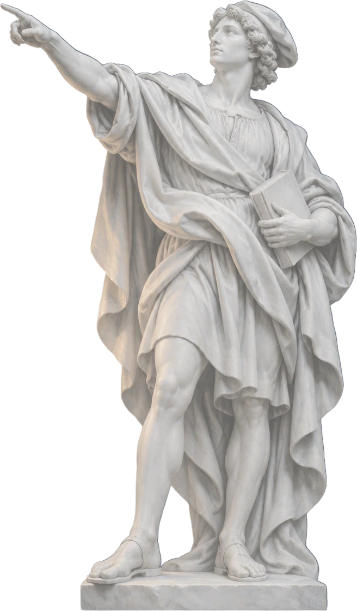

Angel capital for founders of exceptional ability and character.
Lantern is an angel-stage venture capital group.
We write first checks and open our network across the capitals of the world.


What we look for
Virtue and Pragmatism
We back early-stage founders who are committed to both: doing what is right, and doing what works.
We find them before they have raised a pre-seed or seed round, write the first check, and match them with the people in our network who can help them most.



Our Network
Eleven cities.
Six kinds of capital.
Wherever you build next, our network is already there.

Stay in touch
Fund 00 is forming.
Leave your email to hear first when applications and the network open.